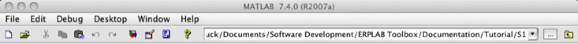
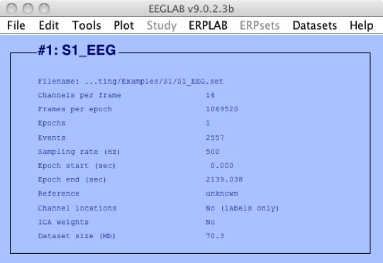
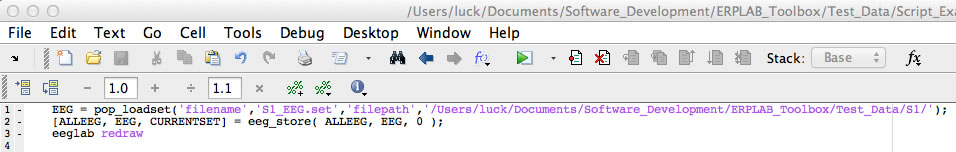
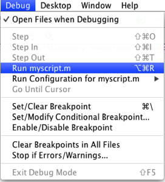
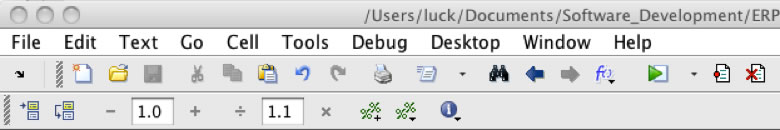
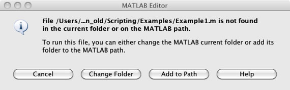

Note: A complete version of this script is available in Test_Data > Script_Examples > Script1.m. However, this script may not work on your computer, because it assumes that the Test_Data folder is in a specific location. See instructions below for details.
In this example, we will do a single EEGLAB step—loading a dataset—in the GUI, look at the history this creates, and then turn it into the world's simplest EEGLAB script. This will give you the basic idea, and more useful scripts will be shown in the following sections.
To begin, launch Matlab and eeglab; if they have already been launched, quit from eeglab, type clear all, and launch eeglab again. This will make sure that you are "starting from scratch" and won't get confused by old things in the history. Now set Matlab's current directory to be the folder with the tutorial data from subject S1. To do this, look at the top of the Matlab command window, where you will see a drop-down menu displaying the current directory (see screenshot below). Click on the browse button (labeled with '…') to the right of the current directly and choose the S1 folder. The top of the window will then look something like this (although the details depend on what operating system you are using and where you've put the tutorial data):

Lots of things can go wrong with scripts. You can expect to spend about 10% of your time writing the scripts and 90% of your time debugging them. Later on, we will discuss some tips for more efficient debugging. But be prepared to spend time tracking down and fixing problems.
One of the most common problems for new users is that something that worked yesterday (or a minute ago) no longer seems to work. This may be because the "initial conditions" are now different. Before running a script, it can be very helpful to quit EEGLAB, type clear all in the command window, and launch EEGLAB again. If this doesn't work, and you're getting really weird problems, you may need to quit and restart Matlab.
You may also find, at some point, that commands on the command line aren't executing, or that you can't get a file to open with the Matlab text editor. This can happen when you select an EEGLAB or ERPLAB command that puts up a window, which typically "locks up" Matlab so that other things won't work until that window has been dismissed. Sometimes the open window is hidden by other windows. If you find that nothing seems to be working, take a look at Matlab's Windows menu to see if there are open windows that should be closed.
The next step is to use FILE > Load existing dataset to load the file named S1_EEG.set into EEGLAB. You will see that S1_EEG is now in the Datasets menu.
Now type EEG.history in the command window (and then press the Return or Enter key; you will do this for every command you give in the command window, so we won't mention it again). This will show you the history so far, which consists of loading the S1_EEG.set file into EEGLAB and then running checkset to make sure that the dataset is OK. Something like the following will appear in the command window (but some things may be different because the path to the S1_EEG.set file is probably not the same on your computer as it is on mine).
>> EEG.history
ans =
EEG = pop_loadset('filename','S1_EEG.set','filepath','/Users/luck/Documents/Software_Development/ERPLAB_Toolbox/Test_Data/S1/');
EEG = eeg_checkset( EEG );
In Matlab, you can execute commands from scripts or from the command line. Let's start by executing the command for loading a dataset from the EEGLAB history. To do this, first quit and restart EEGLAB (but not Matlab)—this won't ordinarily be necessary, but we want you to see how this works when you haven't already loaded the dataset using the GUI. Then copy into the clipboard the line that begins with "EEG = pop_loadset" that you created by typing EEG.history in the command window. Make sure that you copy it from the Matlab command window, not from this documentation (or from the Script1.m file included in the sample dataset). You need to copy it directly from Matlab so that you have the right path for the S1_EEG.set file. If you copy it from this documentation, you will have the path that works on my computer, which won't be right for your computer. Once you've copied this line into the clipboard, put the cursor on the bottom line in the command window, paste, and hit Enter (or Return).
EEGLAB will print something like the following in the command window:
Reading float file '/Users/luck/Documents/Software_Development/ERPLAB_Toolbox/Test_Data/S1/S1_EEG.fdt'...
If you get an error message, you probably don't have the correct path or you didn't have the right history (which might happen if you did some things in the GUI other than the steps described here).
If you've successfully run this command, this means that you've loaded the S1_EEG dataset. You can verify this by typing EEG (followed by RETURN or ENTER) on the command line. (Hint: Typing a variable or command without a semicolon at the end will cause the value of the variable or command to be printed in the command window.) It will then show you the contents of the EEG variable, which will look something like this (but with many additional lines):
>> EEG
EEG =
setname: 'S1_EEG'
filename: 'S1_EEG.set'
filepath: '/Users/luck/Documents/Software_Development/ERPLAB_Toolbox/Test_Data/S1/'
subject: ' '
However, if you look in the EEGLAB GUI, you will notice that S1_EEG is not listed in the Datasets menu. This is because the EEGLAB GUI doesn't "know" that you've loaded a dataset.
To get an idea of how to make the newly loaded dataset visible in the GUI, try running the eegh command (by typing eegh in the command window). You should see something like thisL
>> eegh
[ALLEEG EEG CURRENTSET ALLCOM] = eeglab;
EEG = pop_loadset('filename','S1_EEG.set','filepath','/Users/luck/Documents/Software_Development/ERPLAB_Toolbox/documentation/Scripting/Examples/S1/');
[ALLEEG, EEG, CURRENTSET] = eeg_store( ALLEEG, EEG, 0 );
The first line represents the initial launching of EEGLAB. The second line is the command for loading the dataset (just as in EEG. history). The third line reflects an important aspect of how EEGLAB stores datasets. The currently active dataset is stored in the EEG variable, and the line that loads the file stores the new dataset in this variable (that's what the EEG = part of the line means). EEGLAB can have multiple datasets loaded at one time (these are the datasets that you can ordinarily see in the Datasets menu). This group of datasets is stored in a variable called ALLEEG, which is just an array of EEG variables. When you do something that creates or updates a dataset—stored in the EEG structure—you can put this into the ALLEEG structure with the eeg_store command (the third line in the history shown above). This is necessary only if you want to keep multiple EEG datasets active at one time (e.g., if you want to be able to select them in the Datasets menu). Datasets take up a lot of memory, so you will typically not load multiple datasets into the ALLEEG variable. However, this is useful if you want to use the GUI to see what your script has done (i.e., when you're first learning to write EEGLAB/ERPLAB scripts).
Now let's take the EEG structure that you created by loading S1_EEG.set with the pop_loadset function and add it to the ALLEEG variable. You can simply do this by typing the command [ALLEEG, EEG, CURRENTSET] = eeg_store( ALLEEG, EEG, 0 ); on the Matlab command line (hint: you can just copy this from the eegh command output and paste it into the command window).
The S1_EEG dataset is still not visible in the Datasets menu, because the GUI doesn't "know" that you've updated ALLEEG. To let the GUI know about any changes you've made with commands from the command line or from a script, you should type eeglab redraw in the command window. Try this now. You should then see that the Datasets menu is now active and that S1_EEG is now visible in the EEGLAB GUI, which should look like this:

Note: the zero in the command eeg_store( ALLEEG, EEG, 0 ) is usually a nonzero number that indicates which dataset you are trying to store. For example, if you wanted to store the current EEG variable as the 3rd dataset in the Datasets menu (i.e., the 3rd EEG stored in the ALLEG variable), you would use [ALLEEG, EEG, CURRENTSET] = eeg_store( ALLEEG, EEG, 3 ). Zero is fine for the first EEG that you're loading.
Now we will create a script that executes the EEG = pop_loadset command. This is just a matter of storing the commands in a file rather than typing them into the command window. To do this, go to the Matlab File menu (not the EEGLAB File menu) and select File > New > Script. This will create a new, blank window. You can simply paste the three commands that you've typed into this window. Save the script as a file named something like myscript.m. You can put it in any folder you'd like, but this folder will need to become a part of your Matlab path (or it can be in Matlab's current folder). The script will look something like this:

Before running this script, quit EEGLAB, type clear all in the command window, and relaunch EEGLAB. That way you'll make sure you're starting with a "clean slate."
You can now execute the script. There are various ways to do this, and they may be somewhat different in different versions of Matlab. You might do it by selecting Debug > Run myscript.m, as shown in the following screenshot.

There may also be a button you can click near the top of the script window (like the button with the green triangle under the Help menu in the screenshot below.

It is now time for you to finally run the script (with the Debug menu, the button with green triangle, or however you want to do it). You might see the following error message, which means that the script isn't in the Matlab path. You can click the Add to Path button, and then the script should run.

When you run the script, you might not see much happen, but you should see some evidence of it in the command window. Once the script is complete, you should be able to see S1_EEG in the Datasets menu.
If you had trouble getting this to work, you can take a look at my version of the script, which is in Test_Data > Script_Examples > Script1.m. However, this script will not work on your computer without some modification, because it assumes that the Test_Data folder is in a specific location. But it might still be helpful to look at this script if you're having trouble getting your own script to work.
| <<Getting Started | Table of Contents | Example 2>> |